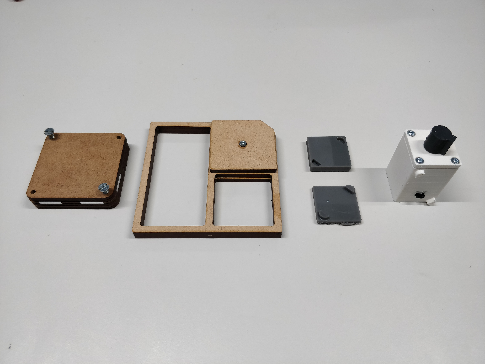
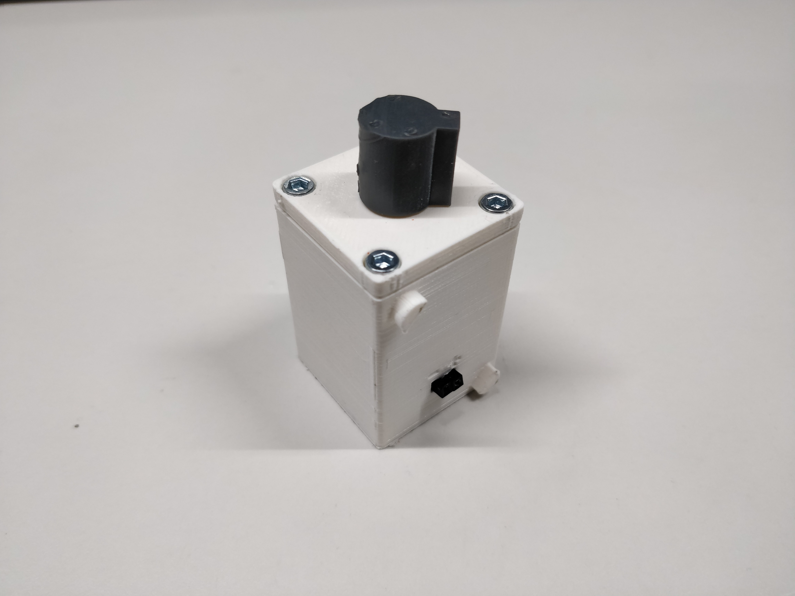
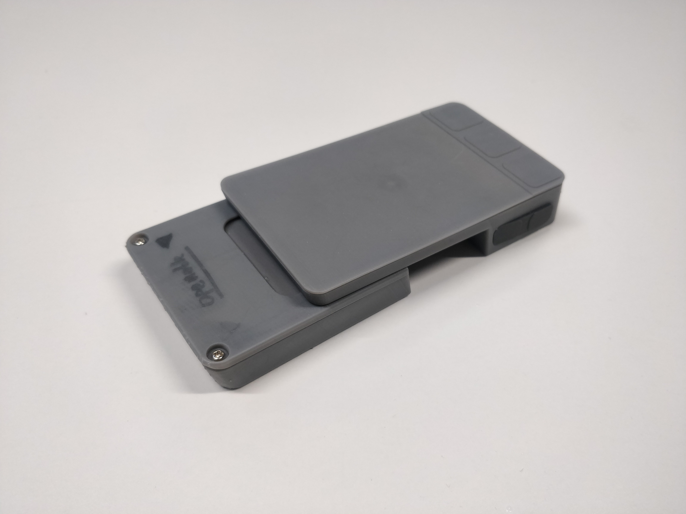
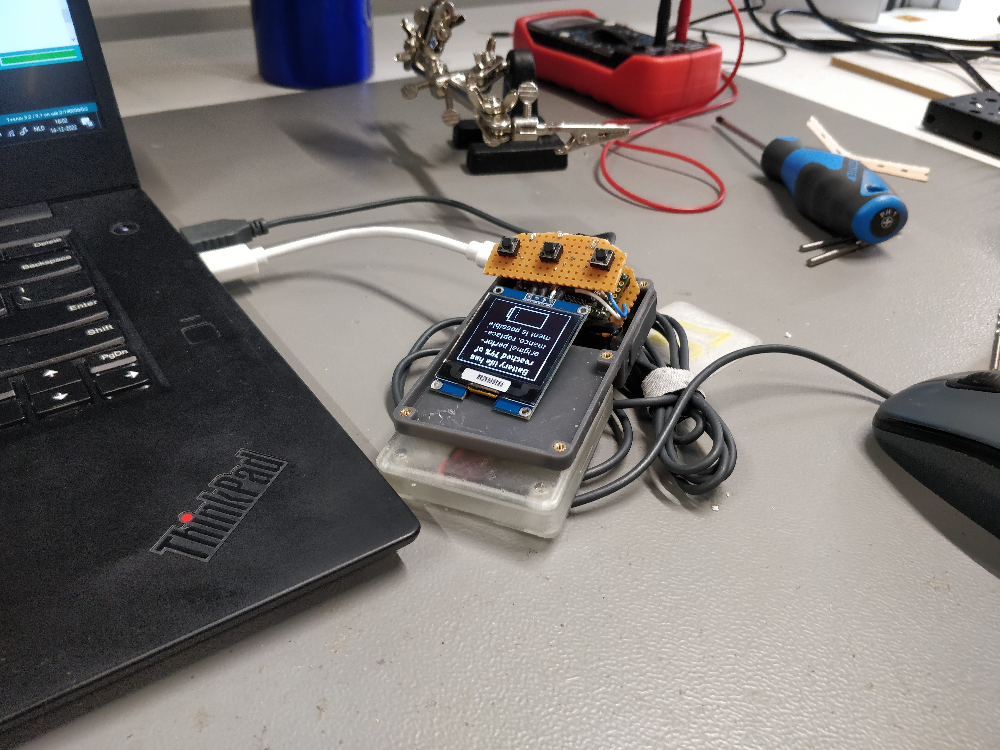
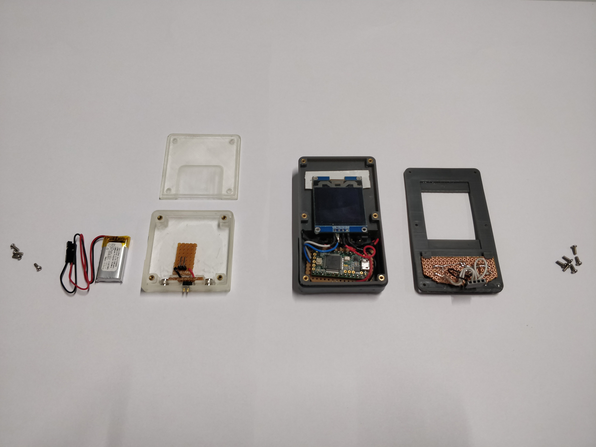
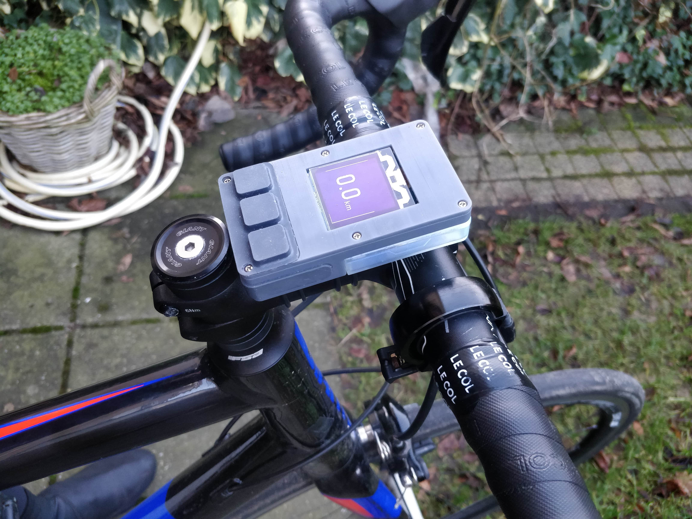

Project bits is a project that explores the possibility of creating consumer electronics products that
are
easily repairable and last a long time without comprimising on the performance of products.
At the beginning of the project I immersed myself into the persepctive of the user. This was done by attempting
repairs on consumer electronics products that otherwise would be replaced. multiple repairs were attempted and
common problems between theses repairs were identified.
After the personal repair attempts I found a lot of common problems beteen devices. So the next step was to find
out if these problems are commonly experienced. In literary research I found there were many workshops held in
which users attempted repairs and common problems were put into a repair barriers and motvations (Terzioğlu, N.
(2021)).

vision based on the repair barriers and motivations model from (Terzioğlu, N. (2021). Repair motivation and
barriers model: Investigating user perspectives related to product repair towards a circular economy.
Journal of Cleaner Production, 289, 125644. https://doi.org/10.1016/j.jclepro.2020.125644)
An exploration into how to visualize repairability and make a device repairable. Using a beard trimmer as a
prop.
The results of various ideation sessions, with various levels of sketching. From quick and dirty to fully
rendered drawings with more communicative value. Some of these ideas were developed further while others were
scrapped.
After the ideation sketches an interesting future was envisioned. A future in which companies would sell modules
and parts and products can be created out of these modules. Or bought together. Making functional parts into
seperate modules could result in the current drive for companies moving from creating a slightly upgraded
product every year to actually improving modules seperately. Plus reaulting in a need for companies to have
universal standards to connect their product modules. Blender renders were created by showing this future
with a possible BOSE speaker module and a framework laptops cartridge which could also be used to deal with
various interfaces needed to interact with the device
The results of various ideation sessions, with various levels of sketching. From quick and dirty to fully
rendered drawings with more communicative value. Some of these ideas were developed further while others were
scrapped. Some of the exploratory prototypes are shown below.



The realization of the final product, a cycling computer was done with consideration of the Level repair system
that is envisioned to be applied to prodcut design.





At the beginning of the project, I set goals to achieve during my final bachelor project. At first, I wanted to
implement a lot of my main expertise area development that I like to work on the most intrinsically. Since these
abilities are the ones I want to work on specializing in the future. However, I also wanted to apply some new
techniques that I did not fully apply to projects yet. Mainly the use of literary research that isn't an
afterthought. Also, the business perspective of the topic is one I wanted to explore more than in previous
projects.
One of the big goals that I could finally apply was related to the user and society expertise area. During my
education at industrial design I have always felt that the way literary research was done, was not the way I
envision it. Sometimes it felt more like shopping for references than really reading the research and weighing
it. So I set the goal to do this differently. I was aiming at doing this by first learning with personal
experience and then seeing if there is research that fit my personal experience with repairs. If the personal
research did not meet up with the literary research the next step would be to do a user test.
Another goal I had was to work on a personally preferred project goal. Working on a project case given by the
squads is a good way to develop skills but it makes it way harder to apply vision or personal values and
beliefs. Additionally, it makes it harder for me to be motivated for a project. So I set the goal to make sure I
could participate in a project Where I determined the case in discussion with coaches. I planned on doing this
by getting a handshake with a coach for my project topic.
Another goal I had at the beginning of the project is to learn more about the application of electronics in
design. Up until now the realization of electronics was still on the level of breadboard prototyping without the
need to really adapt designs to the limitations electronics bring. In terms of business and entrepreneurship,
the goal I set for the project was to try and start a business out of the final bachelor project. Since the
topic is one I really believe in. However, in what form this could be possible I did not know yet at the start
of the project.
The first goal I achieved was getting my topic approved for my final bachelor project. And at the first part of
the project, the personal research in combination with literary research was a great way to start achieving my
goals when it comes to literary research. The personal research I did match up with the literary research I was
able to find on repair.
When it comes to applying electronics in design further than a breakout board and considering the limitation
that there are with design for electronics I feel some of this goal was achieved. The part about considering the
limitations for design for electronics was definitely achieved. During prototyping, I never took an easy out
when it came to increasing the size of the design to a point where it could not represent the intended product
anymore.
Looking back on the project I would like to have done more when it comes to users and society. At the end of the
project, I was rushing to finish my final product. I feel I could have focused more on getting feedback from the
possible user group to get more perspective on the viability of the product and system from a business
perspective. I would have liked to have done more when considering the business perspective of the idea. The
angle I am taking now makes sense. Reflecting on the project I think the bigger impact is by making companies
see that the design system I propose is a great step towards a fairer consumer-company relationship.
About applying all my expertise when it comes to turning an idea into reality: with ideation, low-fidelity
prototyping, high-fidelity prototyping, and applying maker abilities. I was able to create a lot of concepts and
prototypes. Resulting in a prototype-driven design process. I do feel that the way I presented ideas and what
ideas I presented could have been better throughout the project.


_1-min.jpg)